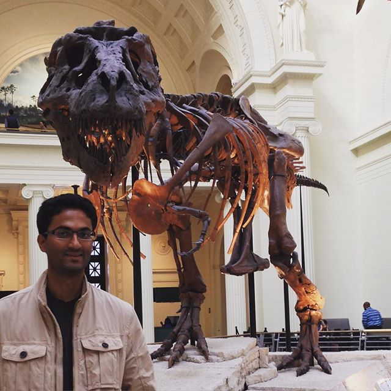
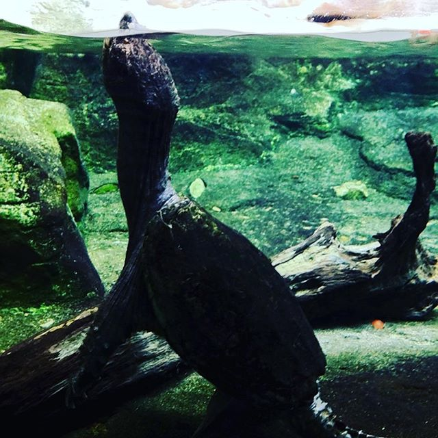
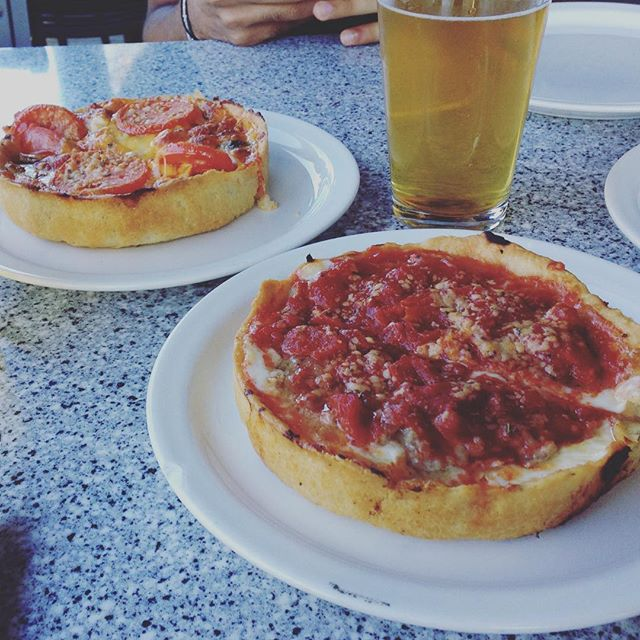

You are here:
Home / Chicago

The Cloud Gate Sculpture, also known as the
"bean," is one of the highlights of Millennium Park. Designed by
the artists Anish Kapoor, the Chicago the Bean sculpture is made of
168 highly polished stainless steel plates - giving the appearance
of liquid mercury. Up close, the highly reflective nature of the
sculpture captures the beautiful skyline of Chicago. The Cloud Gate
Sculpture has thus become a tourist hot spot and is the perfect
place to take your vacation snapshots.

The Field Museum of Natural History is a
natural history museum in Chicago, and is one of the largest such
museums in the world. The museum maintains its status as a premier
natural history museum through the size and quality of its
educational and scientific programs, as well as due to its
extensive scientific specimen and artifact collections./p>

Shedd Aquarium (formally the John G. Shedd
Aquarium) is an indoor public aquarium in Chicago, Illinois in the
United States that opened on May 30, 1930. The aquarium contains
32,000 animals,[1] and was for some time the largest indoor
aquarium in the world with 5,000,000 US gallons (19,000,000 l;
4,200,000 imp gal) of water. Shedd Aquarium was the first inland
aquarium with a permanent saltwater fish collection./p>

The most famous of all Chicago-style
pizzas, deep dish pizza are baked in a pan, giving the pizza it's
characteristically high edge and deep surface for large amounts of
cheese and chunky tomato sauce. We got the Chicago classic (lean
sausage, extra cheese and tomatoes on butter crust) and the Lou
(spinach mix, mushrooms and sliced Roma tomatoes with a melange of
3 cheeses)